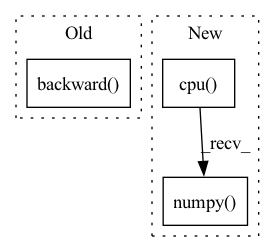

Pattern ID :2126

Before Change
// loss_Gpl = (gen_img[:, 0, 0, 0] * 0 + loss_Gpl).mean() * float(gain)
// loss_numpy["loss_Gpl"] = loss_Gpl.cpu().detach().numpy()
// loss_Gpl.backward() // 咩酱：gain即上文提到的这个阶段的训练间隔。
(gen_img[:, 0, 0, 0] * 0 + loss_Gpl).mean().mul(gain).backward()
// Dmain: Minimize logits for generated images.
// loss3 = 0.0
if do_Dmain:
After Change
loss_Gmain = torch.nn.functional.softplus(-gen_logits) // -log(sigmoid(gen_logits))
loss_Gmain = loss_Gmain.mean()
loss_numpy["loss_Gmain"] = loss_Gmain.cpu().detach().numpy()
loss_G = loss_Gmain
loss_G = loss_G * float(gain)
loss_G.backward() // 咩酱：gain即上文提到的这个阶段的训练间隔。
In pattern: SUPERPATTERN
Frequency: 3
Non-data size: 3
Instances
Fragment ID: 9109322
Project Name: miemie2013/miemiegan
Commit Name: fbc8738996ce75111be885ba7ac313d85969a2b8
Time: 2022-02-25
Author: 53960695+miemie2013@users.noreply.github.com
File Name: mmgan/models/architectures/styleganv2ada_model.py
M Class Name: StyleGANv2ADAModel
N Class Name: StyleGANv2ADAModel
M Method Name: accumulate_gradients(8)
N Method Name: accumulate_gradients(8)
M Parent Class: torch.nn.Module
N Parent Class: torch.nn.Module
M File Name: mmgan/models/architectures/styleganv2ada_model.py
N File Name: mmgan/models/architectures/styleganv2ada_model.py
M Start Line: 138
M End Line: 260
N Start Line: 143
N End Line: 262
'>
Before Change
policy_loss = torch.mean( (self.alpha * new_curr_state_log_pi) - min_curr_state_q_value)
policy_loss_value = policy_loss.detach().cpu().numpy()
self.policy_optimizer.zero_grad()
self.policy_loss.backward()
self.policy_optimizer.step()
//compute temperature loss
if self.automatic_entropy_tuning:
After Change
//compute temperature loss
if self.automatic_entropy_tuning:
alpha_loss = -(self.log_alpha * (new_curr_state_log_pi + self.target_entropy).detach()).mean()
alpha_loss_value = alpha_loss.detach().cpu().numpy()
self.alpha_optim.zero_grad()
alpha_loss.backward()
self.alpha_optim.step()
'>
Fragment ID: 9109313
Project Name: x35f/unstable_baselines
Commit Name: e977236fade6fe13bf98ed7225bf269e766b9ecc
Time: 2021-03-09
Author: 1621322691@qq.com
File Name: sac/models.py
M Class Name: SACAgent
N Class Name: SACAgent
M Method Name: update(2)
N Method Name: update(2)
M Parent Class: BaseAgent,torch.nn.Module
N Parent Class: BaseAgent,torch.nn.Module
M File Name: sac/models.py
N File Name: sac/models.py
M Start Line: 73
M End Line: 121
N Start Line: 72
N End Line: 124
'>
Before Change
raise NotImplementedError
policy_loss_value = policy_loss.detach().cpu().numpy()
self.policy_optimizer.zero_grad()
policy_loss.backward()
self.policy_optimizer.step()
self.tot_update_count += 1
After Change
//entropy loss
entropy_loss = -torch.mean(dist_entropy)
entropy_loss_value = entropy_loss.detach().cpu().numpy()
tot_loss = v_loss + entropy_loss + policy_loss
self.policy_optimizer.zero_grad()
self.v_optimizer.zero_grad()
'>
Fragment ID: 9109316
Project Name: x35f/unstable_baselines
Commit Name: 5af9f89c6d399a424b451a524af66c97ab900df8
Time: 2021-03-30
Author: 1621322691@qq.com
File Name: ppo/model.py
M Class Name: PPOAgent
N Class Name: PPOAgent
M Method Name: update(2)
N Method Name: update(2)
M Parent Class: BaseAgent,torch.nn.Module
N Parent Class: BaseAgent,torch.nn.Module
M File Name: ppo/model.py
N File Name: ppo/model.py
M Start Line: 78
M End Line: 118
N Start Line: 79
N End Line: 125